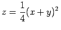

Inhalt Index DeskTop Bronstein

 Differentialgleichungen Partielle Differentialgleichungen Partielle Differentialgleichungen 1. Ordnung Nichtlineare partielle Differentialgleichungen 1. Ordnung
Differentialgleichungen Partielle Differentialgleichungen Partielle Differentialgleichungen 1. Ordnung Nichtlineare partielle Differentialgleichungen 1. Ordnung


Für  kann der charakteristische Streifen geometrisch als Kurve gedeutet werden, die sich dadurch auszeichnet, daß in jedem ihrer Punkte (x,y,z) ihre Tangentialebene definiert ist. Dadurch kann die Aufgabe, die Integralfläche der Gleichung
kann der charakteristische Streifen geometrisch als Kurve gedeutet werden, die sich dadurch auszeichnet, daß in jedem ihrer Punkte (x,y,z) ihre Tangentialebene definiert ist. Dadurch kann die Aufgabe, die Integralfläche der Gleichung
| (9.77) |
zu bestimmen, die durch eine gegebene Kurve hindurchgeht, also das CAUCHYsche Problem zu lösen, auf eine andere Aufgabe zurückgeführt werden: Durch die Punkte der Anfangskurve sind die charakteristischen Streifen hindurchzulegen, deren zugehörige Ebene diese Kurve tangiert. Man gewinnt die Werte p und q in den Punkten der Anfangskurve aus den Beziehungen F(x,y,z,p,q) =0 und , die im Falle nichtlinearer Differentialgleichungen im allgemeinen mehrere Lösungen besitzen. Damit sich bei Stellung des CAUCHYschen Problems eindeutige Lösungen ergeben, sind entlang der Anfangskurve zwei stetige Funktionen p und q festzulegen, die den beiden genannten Beziehungen genügen.
Die Existenzbedingungen für die Lösung des CAUCHYschen Problems s. Lit. 9.26.
| Beispiel A |
|
Für die partielle Differentialgleichung pq=1 und die Anfangskurve kann entlang der Kurve p = x und q = 1/x gesetzt werden. Das charakteristische System besitzt die Form Die Einhüllende einer einparametrigen Integralflächenschar ist ebenfalls eine Integralfläche. Unter Beachtung dieses Umstandes kann das CAUCHYsche Problem mit Hilfe des vollständigen Integrals gelöst werden. Dazu wird eine einparametrige Schar von Lösungen gesucht, die die Ebenen berühren, die in den Punkten der Anfangskurve gegebenen sind. Dann ist noch die Einhüllende dieser Schar zu bestimmen. |
| Beispiel B |
|
Für die CLAIRAUTsche Differentialgleichung z - px - qy + pq = 0 soll die Integralfläche bestimmt werden, die durch die Kurve verläuft. Das vollständige Integral der Differentialgleichung lautet z=ax+by-ab. Da entlang der Anfangskurve p = q = x gilt, bestimmt man mit der Bedingung a = b die erforderliche einparametrige Integralflächenschar. Nach Ermittlung der Einhüllenden erhält man . |